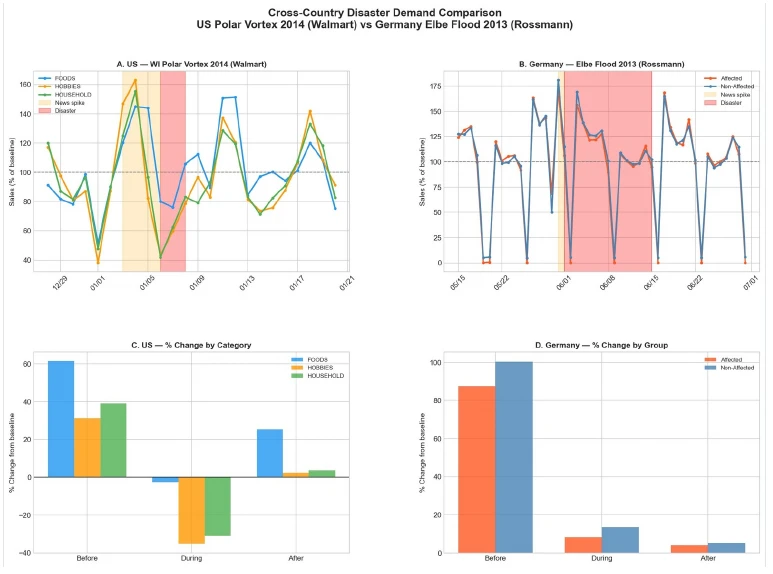
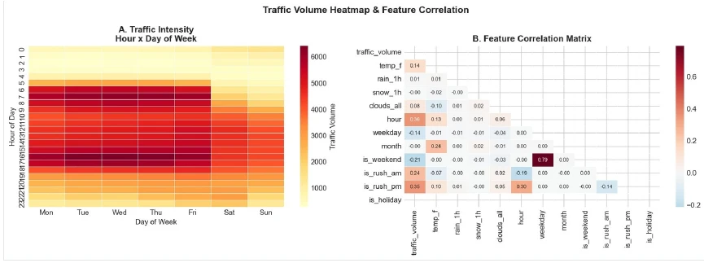

The problem
Historical dashboards describe what happened. Planning also needs estimates of what could happen under changing weather, demand, or operating conditions, together with a clear account of uncertainty and data limitations.
03 / Business World Models
Understand disruption. Compare possible responses.
NovaPunk combines exploratory data analysis, predictive modelling, and scenario simulation to study how demand and operations change. The service connects data preparation and interpretable findings to forecasts and decision-support applications.
Discuss this serviceHistorical dashboards describe what happened. Planning also needs estimates of what could happen under changing weather, demand, or operating conditions, together with a clear account of uncertainty and data limitations.
Three internal studies use public data to examine disruption in different domains. They share an observe, learn, and simulate approach, while the models and completion status differ by domain.
Static demonstration page. Figures and examples replace the video presentation for now; no live agent, model, or simulator runs on this page.
Retail combines TFT forecasting with Monte Carlo scenario studies. Energy evaluates a PPO policy within Grid2Op. Traffic combines a TFT forecast with Gemini-generated explanations. The supplied traffic report lists MAE 192 vehicles/hour and R² 0.977 on its validation data; these results are reported from the study and have not been rerun for this website.
Collect operational history and external signals.
Identify patterns, missing data, and candidate drivers.
Fit and evaluate models on held-out periods.
Compare assumptions and possible future conditions.
Present forecasts and scenario-specific findings.
Sales history and external signals feed forecasting and Monte Carlo disruption scenarios.
PJM/EIA observations inform Grid2Op scenarios and PPO policy evaluation.
Hourly volume and weather feed a 24-hour TFT forecast and natural-language explanations.


Metrics are reproduced from the supplied research or original project account. They have not been independently rerun for this website.
Figures and reported findings are drawn from Business World Models - Sungwon Son, Spring 2026.
Tell us about your workflow, available data, and the decision or task you want to improve.
Contact NovaPunk